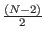
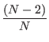
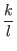
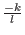
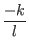

Next: Corollary 1.2
Up: Proof that Algorithm Increases
Previous: Theorem 1
Contents
Corollary 1.1: We seek to show that after applying A, both k'
and l' are positive, under the following conditions:
Let the state vector for:
- one state have amplitude k
- each of the remaining (N - 1) states the amplitude is l
And let:
- k and l be real
- k be negative, and l be positive
-
<

- N9
Then, after applying A, both k' and l' are positive.
Proof:
First we will show that k' is positive:
Next we will show that l' is positive:
- From theorem 1 we know
l' =
 k +
k +  l.
l.
- By assumption
<
- For N9,
 > . Therefore when N9:
> > , and:
l' =
 k
k + 
l >
k + 
l
- Because k is negative and l is positive by assumption,
= .
- Therefore:
l' =
k +
l >
k + 
l = (
- 1)
k
- It follows that l' is positive because k is positive and
-1 > 0 for N3 (and by assumption N9).
[Grover96]
Next: Corollary 1.2
Up: Proof that Algorithm Increases
Previous: Theorem 1
Contents
Matthew Hayward - Quantum Computing and Grover's Algorithm GitHub Repository